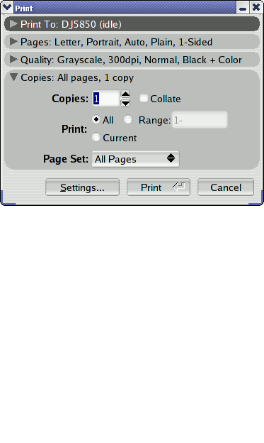
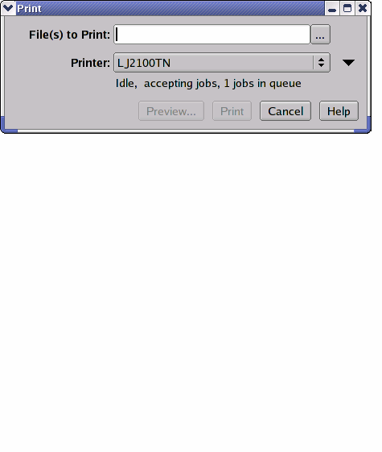

This page holds some of my publicly-available experimental user-interfaces, right now just print dialogs.
The print dialog shown at the right provides an expandable user-interface. Each pane has a title/summary bar - click on the bar to show/hide the pane and change the options in the pane. The destination pane also shows the status of the selected printer.
Download the demo source (requires FLTK and CUPS):
My second dialog (below) was going to be part of a new version of ESP Print Pro. I used the Apple Print dialog as inspiration, combined with some research here to determine which options are most used and what some of our advanced users wanted. The dialog dynamically resizes based on the options and printer shown.
The "Files to Print" field only appears if you are printing from the command-line. Click on the "..." button to select one or more files for printing.
Hover over the printer status line to see the detailed printer information in a tooltip.
While I can't provide the source for this demo, I do have a Linux 32-bit x86 binary you can run on systems with CUPS 1.2 or higher installed:
